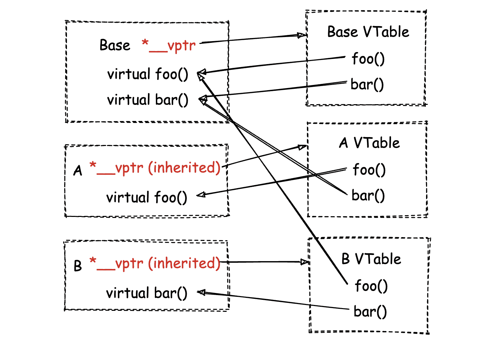

vtable 与 vptr
这个大众话题一直被放在 TODO 列表里，今天终于有时间来稍微写一下了。问题是之前有人在群里问能不能直接在 C/C++ 代码里访问类的 Virtual Table（后面简称 vtable），但事实情况是由于编译器的 ABI 不同，实际上对于 vtable 的具体结构和内存布局没有标准化的说明，因此不能按照想当然的方式来访问。本文我们来具体深入探究一下。
我们以最简单（不考虑多继承 \ 虚继承）的情况为例，比如给出如下这段代码：
class Base {
public:
virtual void foo() {
std::cout << "Base::foo" << std::endl;
};
virtual void bar() {
std::cout << "Base::bar" << std::endl;
};
};
class A: public Base {
public:
void foo() {
std::cout << "A::foo" << std::endl;
};
};
class B: public Base {
public:
void bar() {
std::cout << "B::bar" << std::endl;
};
};
int main(int argc, char **argv) {
A a;
B b;
a.bar(); // "Base::bar".
b.bar(); // "B::bar".
a.foo(); // "A::foo".
b.foo(); // "Base::foo".
return 0;
}
按照 vtable 与 vptr 之间的关系，每一个具有虚函数的类都会有一个对应的 vtable，且每个类中都有一个 vptr 指针指向自身的 vtable。相应的，多继承的类对象具有多个 vptr。vtable 中的每一项都是一个函数指针，分别指向对应该类对象在调用某个成员方法时，所应该实际调用的成员函数（the most-derived one）。两者的整体结构可大体归纳如下：

需要注意的是，vtable 的实际结构是由 ABI 决定的，比如对于 Itanium 64-bit 来说，vtable 的结构和布局可以参考【**这里**】。